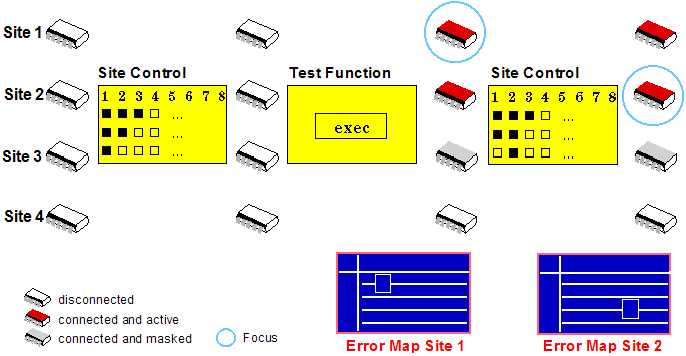

Changing the site in focus
When you execute tests on multiple sites, the results for the site in (query) focus is shown. Only one site can be in focus at any time. Consequently to view the results from a different site, you must change the identity of the site in (query) focus.
Before you begin
Make sure that each site is available (the setup files for each site are correct).
Procedure
- In the SmarTest Work Center, click the menu .
- The Site Control window appears. Check the focus check box for the required site in focus. This automatically also checks the enable and active check boxes.
- Execute a test suite or a testflow.
Results
The results of the site in (query) focus are shown in the Results windows, or you can just open the Result window to view the result of the last test performed on the site.
Note Changing the focus changes the contents of the result tools, but it does not update
the report window.
Example

Functional changes
- Introduced before SmarTest 6.3.2